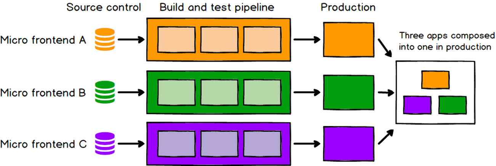
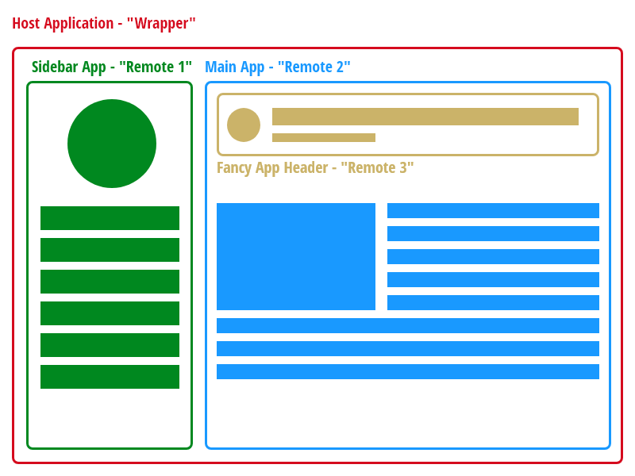

Klaus Hamperl
Teamlead Frontend Development at Einhell Germany AG
Good, stable and maintainable frontends are hard to reach!
It gets even harder if there working more teams on one application.
Another big topic is reusability. We won't reinvent the wheel over and over again.
In backend development a well known solution:
distributed services!
Small, specialized applications for one job.
Easy to maintain, easy to update and easy to add features.
Why not split up the monolithic frontend up to small services.
If you have a monolithic frontend you can easily transit it
to a Micro Frontend.
Step by step, feature by feature.
A micro frontend is smaller and easier to maintain per definition.
If there is a special feature for your application it can be deployed independently from other parts. 
Different parts of a frontend application can be developed by different teams. Even in different frameworks...
For every part of the micro frontend you need a separate entry point, separate (sub)domain, a separate deployment and maybe separate monitoring.
Even the code base for on part of the micro frontend is smaller, the complexity of the handling of all parts
and the communication between the frontends and the backend could be increase.
Specially when dependency sharing, i18n or user authentication comes in.
Because of this points it often make no sense to take this approach in small projects.
In short, micro frontends are about breaking big and scary things down into smaller, more manageable pieces and then clearly naming the dependencies between them.
Our technology choices, our code bases, our teams and our release processes should all be able to work and evolve independently of each other.
To make this magic happen we need the Vite plugin:
vite-plugin-federation
by originjs
This plugin is inspired by Webpack module federation, and it is compatible with it.
Using module federation requires at least 2 (Vue-)projects. One project act as a wrapper (host application) the other(s) as remote applications
We build up our application out of multiple SPAs - hosted on their own domain.
Open your existing Vue-Project or create a new one.
npm install @originjs/vite-plugin-federation --save-dev
or
yarn add @originjs/vite-plugin-federation --dev
All configs have to be done in vite.config.js
// vite.config.js
import federation from "@originjs/vite-plugin-federation";
export default {
plugins: [
federation({
name: 'remote-app',
filename: 'remoteEntry.js',
// Modules to expose
exposes: {
'./RemoteButton': './src/RemoteButton.vue',
},
shared: ['vue']
})
]
}
All configs are have to be done in vite.config.js
// vite.config.js
import federation from "@originjs/vite-plugin-federation";
export default {
plugins: [
federation({
name: 'host-app',
remotes: {
remote_app: "http://localhost:5001/assets/remoteEntry.js",
},
shared: ['vue']
})
]
}
name: stringName of the module - needed for the import in the host app
filename: stringName of the remote entry file - default remoteEntry.js
exposesList of components exposed from the remote to the public. Required in remote module
remotesList of components which are imported from one or more remote modules
sharedThe shared option has some more possibilities to configure.
version: stringOnly works on host side, the version of the shared module provided is version of the package.json file in the shared package by default, you need to configure it manually only if you can't get version by this method.
requiredVersion: trueOnly for the remote side, it specifies the required version of the host shared used, when the version of the host side does not meet the requiredVersion requirement, it will use its own shared module, provided that it is not configured with import=false, which is not enabled by default.
generate: booleangenerate a shared chunk file or not , if you make sure that the host side has a share that can be used, then you can set not to generate a shared file on the remote side to reduce the size of the remote's chunk file, which is only effective on the remote side, the host side will generate a shared chunk no matter what.
At the moment we use the micro frontend approach for two different kinds of apps.
We use this for forms on our websites.
And for some of our business applications.
The host application combines all remotes in one working form.
This app will be embedded in the website
vite.config for host:
// vite.config.js
...
import federation from "@originjs/vite-plugin-federation";
export default (data: {mode: string, command: string, ssrBuild: boolean}) => {
// some configuration logic...
return defineConfig({f
plugins: [
federation({
name: 'customer-complaint-form',
remotes: {
'e-mf-service': 'https://..../remoteEntry.js'
'mf-contact-data': 'https://..../remoteEntry.js'
'mf-address-book': 'https://..../remoteEntry.js'
'mf-article-search': 'https://..../remoteEntry.js'
'mf-article-details': 'https://..../remoteEntry.js'
'mf-spare-part-select': 'https://..../remoteEntry.js'
'mf-hotspot-app': 'https://..../remoteEntry.js'
},
shared: [
'vue',
'pinia',
'axios',
'keycloak-js',
'@shared/e-vue-components',
'@vuelidate/core',
'vue-easy-lightbox',
'friendly-challenge'
]
...
})
]
})
Usage in App.vue
// App.vue
...
import { useI18n } from 'vue-i18n'
...
const ContactData = defineAsyncComponent({
loader: () => import('mf-contact-data/ContactData')
})
const AddressBook = defineAsyncComponent({
loader: () => import('mf-address-book/AddressBook')
})
const ArticleSearch = defineAsyncComponent({
loader: () => import('mf-article-search/ArticleSearch')
})
const ArticleDetails = defineAsyncComponent({
loader: () => import('mf-article-details/ArticleDetails')
})
const SparePartSelect = defineAsyncComponent({
loader: () => import('mf-spare-part-select/SparePartSelect')
})
const HotspotApp = defineAsyncComponent({
loader: () => import('mf-hotspot-app/HotspotApp')
})
...
Each remote provides one part of the form - for example an Article-Search.
vite.config for the remote: Article-Search:
// vite.config.js
...
import federation from "@originjs/vite-plugin-federation";
export default (data: {mode: string, command: string, ssrBuild: boolean}) => {
// some configuration logic...
return defineConfig({
plugins: [
federation({
name: 'mf-article-search',
remotes: {
'e-mf-service': 'https://..../remoteEntry.js'
},
exposes: {
'./ArticleSearchI18n': './src/modules/core/application/service/i18n.service.ts',
'./ArticleSearch': './src/modules/productSearch/presentation/views/ProductSearch.vue',
'./ArticleSearchStore': './src/modules/productSearch/infrastructure/store/article.store.ts'
},
shared: [
'vue',
'pinia',
'axios',
'keycloak-js',
'@shared/e-vue-components',
'@vuelidate/core',
'vue-easy-lightbox',
'friendly-challenge'
]
...
})
]
})
1. The app will be expanded over time from different teams.
2. Each app has its own routings.
3. Each app has its own translation files.
4. A store for sharing auth-data was needed for each app.
5. The host application should always be available - even if one of the modules is offline.
That's why we chose the micro frontend approach.
Every team can work independently.
There can only be one active instance of the Vue-Router.
This active instance is in host app.
So the routes have to be in the host app as well.
First setup routes as usually:
//routes.ts
import type { RouteRecordRaw } from 'vue-router'
import AwmsDashboard from '@/modules/dashboard/presentation/view/AwmsDashboard.vue'
...
const routes: RouteRecordRaw[] = [
{
path: '',
name: 'awms-home',
redirect: '/awms'
},
{
path: '/awms',
name: 'AWMS-Dashboard',
component: AwmsDashboard
},
...
]
...
Second the remote apps have to expose their own routes:
//vite.config.ts
...
import vue from '@vitejs/plugin-vue'
import federation from '@originjs/vite-plugin-federation'
...
plugins: [
vue(),
federation({
name: 'ewms-awms',
filename: 'remoteEntry.js',
exposes: {
'./App': './src/App.vue',
'./AwmsI18n': './src/modules/core/application/service/i18n.service.ts',
'./AppService': './src/modules/dashboard/application/service/appRegister.service.ts',
'./AwmsRoutes': './src/modules/core/application/router/routes.ts',
'./AwmsStore': './src/modules/core/infrastructure/store/coreStore.ts'
},
...
Third import the routes in host:
//vite.config.ts
...
import vue from '@vitejs/plugin-vue'
import federation from '@originjs/vite-plugin-federation'
...
plugins: [
vue(),
federation({
name: 'ewms-vue-main',
remotes: {
...
'ewms-awms': 'https://...../awms/remoteEntry.js',
},
...
Use the imported routes on the host:
//routes.ts
...
let routes: RouteRecordRaw[] = [
{
path: '/',
name: 'home',
redirect: '/dashboard'
},
...
]
try {
const awmsWidget = await import('ewms-awms/AwmsRoutes')
if (awmsWidget && awmsWidget.default && awmsWidget.default.routes) {
routes = [...routes, ...(await awmsWidget.default.routes)]
}
} catch (err) {
console.error('Some fancy error handling', err)
}
...
Now all routes from the remote apps are available in the host application
Same problem with internationalization:
There can only be on active instance of the Vue-I18n.
Let's solve this one the same way as with the routes before.
First set up i18n as usually in the remote app. But prepare a function which returns the messages for your selected language!
//i18n.service.ts
import { createI18n } from 'vue-i18n'
import en from '@/lang/en.json'
...
const setupI18n = (options = { locale: 'en_GB' }): I18n => {
const i18n = createI18n({
...options,
...
})
...
const exposeAwmsMessages = async (locale: string) => {
return await import(`../../../../lang/${locale}.json`)
}
Expose the message export function:
//vite.config.ts
...
import vue from '@vitejs/plugin-vue'
import federation from '@originjs/vite-plugin-federation'
...
plugins: [
vue(),
federation({
name: 'ewms-awms',
filename: 'remoteEntry.js',
exposes: {
'./App': './src/App.vue',
'./AwmsI18n': './src/modules/core/application/service/i18n.service.ts',
'./AppService': './src/modules/dashboard/application/service/appRegister.service.ts',
'./AwmsRoutes': './src/modules/core/application/router/routes.ts',
'./AwmsStore': './src/modules/core/infrastructure/store/coreStore.ts'
},
...
Third import the messages in host:
//vite.config.ts
...
import vue from '@vitejs/plugin-vue'
import federation from '@originjs/vite-plugin-federation'
...
plugins: [
vue(),
federation({
name: 'ewms-vue-main',
remotes: {
...
'ewms-awms': 'https://...../awms/remoteEntry.js',
},
...
Use the imported messages on the host:
//i18n.service.ts
import { createI18n } from 'vue-i18n'
import en from '@/lang/en.json'
...
const setupI18n = async (options = { locale: 'en' }): Promise => {
let messages = {
...en
}
...
]
try {
const awmsI18n = await import('ewms-awms/AwmsI18n');
const { exposeAwmsMessages } = awmsI18n.default.useI18nService();
const awmsMessages = await exposeAwmsMessages(options.locale);
messages = {
...messages,
...awmsMessages.views,
}
} catch(err){
console.error('AWMS not available', err)
}
const i18n = createI18n({
...options,
messages: { en: messages },
fallbackLocale: 'en'
})
...
Now the translated messages from the remote app are available in the host as well
The solution: a new microservice for handling authentication:
e-mf-service
The e-mf-service provides 3 functions that can be used in all other services.
In this global Pinia Store all necessary data for a whole app can be stored.
For example the logged-in user and his roles.
This service takes care of the login process to the dedicated authentication platform:
login, logout, token- and role-management.
...
import type {KeycloakOnLoad} from "keycloak-js";
import Keycloak from "keycloak-js";
export function useKeycloak() {
const initKeycloak = async (kcOptions: KcInitOptions) => {
// Set Options from params
const initOptions: KcInitOptions = {
url: kcOptions.url,
realm: kcOptions.realm,
clientId: kcOptions.clientId,
onLoad: kcOptions.onLoad || 'login-required'
}
// Init and return Keycloak
return new Keycloak(initOptions)
}
const loginUser = async (keycloak: Keycloak, onLoad: KeycloakOnLoad = 'login-required') => {
return keycloak.init({
onLoad: onLoad,
checkLoginIframe: false
})
}
const logoutUser = (keycloak: Keycloak) => {
keycloak.logout()
}
const loadUserProfile = (keycloak: Keycloak) => {...}
const refreshToken = async (keycloak: Keycloak) => {...}
const hasRole = (keycloak: Keycloak, role: string) => {...}
const token = (keycloak: Keycloak): string => {...}
const loginLink = (keycloak: Keycloak, redirect: string) => {...}
return { initKeycloak, ..., token }
}
This service is connected to the authentication service.
It creates an interceptor for axios which applys a valid token to each call.
import axios from 'axios'
import { useKeycloak } from "@/services/keycloak.service";
import type Keycloak from 'keycloak-js'
export function useAxiosService() {
const createInterceptor = (keycloak: Keycloak) => {
axios.interceptors.request.use(
async (config) => {
await useKeycloak().refreshToken(keycloak)
config.headers.Authorization = useKeycloak().token(keycloak)
config.withCredentials = true
return config
},
(error) => Promise.reject(error)
)
}
return { createInterceptor }
}
import { defineConfig } from 'vite'
import vue from '@vitejs/plugin-vue'
import federation from "@originjs/vite-plugin-federation";
...
export default defineConfig({
plugins: [
vue(),
federation({
name: 'e-mf-service',
filename: 'remoteEntry.js',
exposes: {
'./globalStore': './src/stores/global.store.ts',
'./keycloakService': './src/services/keycloak.service.ts',
'./axiosService': './src/services/axios.service.ts'
},
shared: ['vue', 'pinia', 'axios', 'keycloak-js', '@shared/e-vue-components'],
}),
...
})
The first check whether a service is available or not happens in the main.ts file of the host application by loading all stores of the remote services.
//main.ts
...
const routes = await useRoutes().initRoutes()
const router = createRouter({
history: createWebHistory(import.meta.env.BASE_URL),
routes
})
// Init I18n
const i18n = await useI18nService().setupI18n()
// Create Vue App
const app = createApp(App)
app.provide('i18nInstance', i18n)
app.use(router)
app.use(i18n)
app.use(createPinia())
// Init Pinia Stores
const coreStore = useCoreStore()
const globalStore = useGlobalStore()
globalStore.keycloak = await useKeycloak().initKeycloak()
globalStore.keycloakUser = await useKeycloak().loadUserProfile()
// Load micro frontend modules
...
try {
const SlStore = await import('ewms-shoplocator/SlCoreStore')
const slCoreStore = SlStore.default.useCoreStore()
slCoreStore.apiUrl = 'https://api-url...'
} catch (err) {
console.error('Shop-Locator Service not available', err)
}
try {
const AwmsStore = await import('ewms-awms/AwmsStore')
const awmsCoreStore = AwmsStore.default.useCoreStore()
awmsCoreStore.apiUrl = 'https://api-url...'
} catch (err) {
console.error('AWMS Service not available', err)
}
// Finally mount the App
app.mount('#app')
The second check happens in the App.vue of the host application when menus are created
//App.vue
...
const initMainMenuAndButton = async (t: ComposerTranslation) => {
const mainMenu: MenuItem[] = []
const applicationButtons: ApplicationButton[] = []
mainMenu.push({
title: t('ewms-wrapper.menu.main-menu.items.dashboard'),
icon: 'mdi-home',
link: '/dashboard',
id: 0,
active: true
})
try {
const slWidget = await import('ewms-shoplocator/AppService')
if (slWidget) {
if (slWidget.default && slWidget.default.useShoplocatorRegisterService) {
mainMenu.push(slWidget.default.useShoplocatorRegisterService().getMenuItem(t))
}
if (slWidget.default && slWidget.default.useShoplocatorRegisterService) {
applicationButtons.push(slWidget.default.useShoplocatorRegisterService().getAppButton(t))
}
}
} catch (err) {
console.log('Shop Locator not available', err)
}
try {
const awmsWidget = await import('ewms-awms/AppService')
if (awmsWidget) {
if (awmsWidget.default && awmsWidget.default.useAwmsRegisterService) {
mainMenu.push(awmsWidget.default.useAwmsRegisterService().getMenuItem(t))
}
if (awmsWidget.default && awmsWidget.default.useAwmsRegisterService) {
applicationButtons.push(awmsWidget.default.useAwmsRegisterService().getAppButton(t))
}
}
} catch (err) {
console.log('AWMS not available', err)
}
...
The third check are happened when routes and translations are imported as shown before
In case of the remote service has no own routes the app form remote service must be imported.
Here is one example:
//Subsidiaries.vue
So if the remote module is available a menu entry and routes will create, translations will loaded and stores will initialized.
Otherwise, an error will be logged on the console and the module was not registered.
All other, reachable, modules where loaded and available in the main (host) application